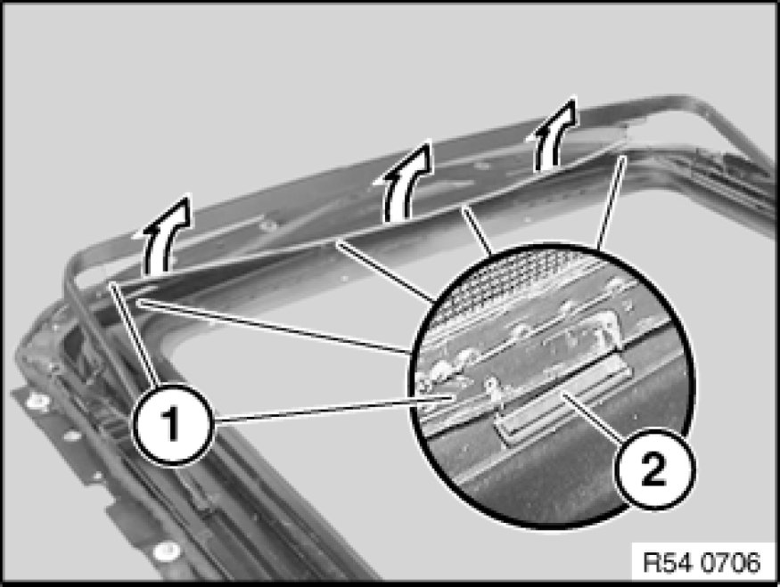
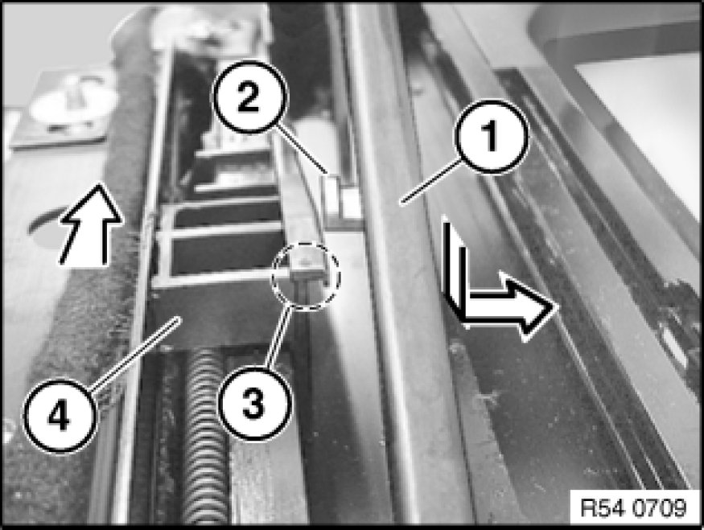
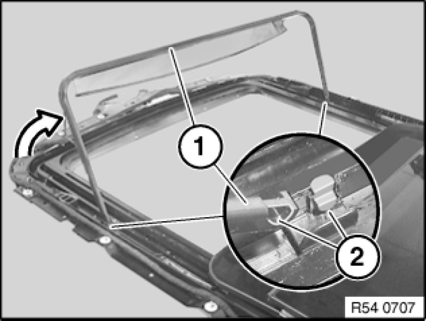

54 13 090 Removing and Installing / Replacing Wind Deflector
54 13 090 - Removing and installing/replacing wind deflector

Necessary preliminary tasks:
- Open slide/tilt sunroof

Note:
Shown removed here for purposes of clarity.
Pull plastic strip (1) on net of wind deflector out of retainers (2).
Important!
Do not pull on the net so as to avoid tearing the net.
Installation Note:
If necessary, reinstall retainers in frame.

Important!
Tape off paintwork in working area.
Avoid bending wind deflector (1).
Note:
Pictures show removal on the left side, proceed in the same way for the right side.
Slide control carriage (4) for wind deflector with plastic wedge towards front.
Carefully lift wind deflector (1) in direction of arrow with guide (2) out of rail (3).
Installation:
Make sure clamping elements are correctly seated.

Tilt wind deflector (1) into vertical position and remove.
Installation Note:
Make sure wind deflector (1) is correctly seated in pivot point (2).
If necessary, replace faulty pivots (2) (refer to EPC repair kit).